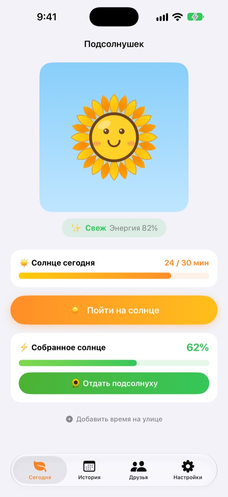
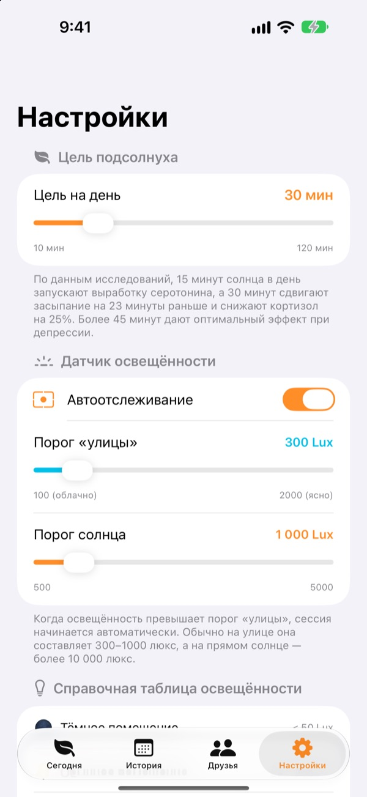
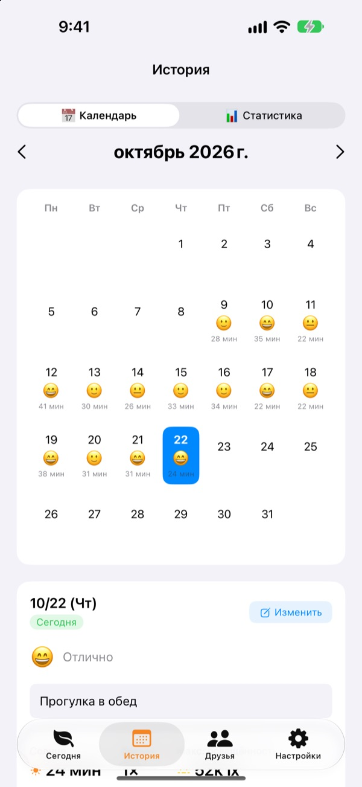
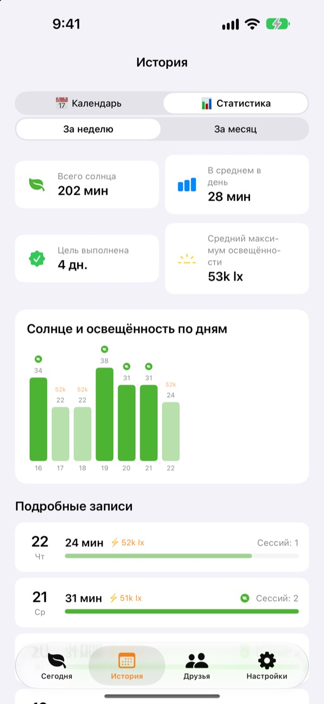

Сегодняшнее солнце
растит ваш подсолнух
Стоит выйти на улицу, и время на солнце считается само. Отдайте собранное солнце подсолнуху, и он расцветёт. Забудете о нём на пару дней, и он начнёт вянуть.
Все функции бесплатны. Записи хранятся только на устройстве.

Соберите немного солнца
Выберите, насколько светло и как долго, наберите солнца и отдайте его подсолнуху, который уже начал вянуть.
Сколько минут солнца вы получили сегодня?
Пара шагов до метро, быстрый выход за обедом. Если весь день провести в помещении, только к вечеру понимаешь, что солнца почти не видел. Подсолнушек показывает время на улице в цифрах, а подсолнух ждёт завтрашней прогулки.
Выходите, и он сам всё измерит
Нажмите Пойти на солнце и выходите на улицу. Приложение оценивает яркость вокруг по данным экспозиции фронтальной камеры. Когда свет держится на уровне улицы около 30 секунд, начинается запись. Фото не делаются и не сохраняются.
После этого датчик включается всего на 20 секунд раз в 2 минуты, чтобы беречь батарею.

Солнце и настроение каждый день
В календаре у каждого дня есть время на солнце, эмодзи настроения и короткая заметка. Были на улице, но не включили запись? Через Добавить время на улице можно добавить от 5 до 120 минут.

Неделя и месяц как на ладони
Недельная и месячная статистика показывает, в какие дни вы выполнили цель и сколько в среднем были на солнце. Цель на день можно выбрать от 10 до 120 минут, а на главном экране сразу видно, сколько осталось сегодня.
Виджеты на экране «Домой» и экране блокировки, а также Dynamic Island показывают сегодняшнее солнце и состояние подсолнуха.

Три шага, чтобы начать
- 1
Задайте цель на день
По умолчанию 30 минут. В настройках можно выбрать от 10 до 120.
- 2
Выйдите на солнце
Нажмите
Пойти на солнцеи выходите, не закрывая приложение. Доступ к камере спросят один раз. - 3
Покормите подсолнух
Нажмите
Отдать подсолнуху, и собранное солнце станет энергией.
Как свет превращается в солнце
- Меньше 300 лк
- Слабый свет: не считается временем на солнце
- 300–1 000 лк
- Улица / облачно: 1–3% за 10 минут
- 1 000–10 000 лк
- Солнце: 3–33% за 10 минут
- От 10 000 лк
- Яркое солнце: больше 33% за 10 минут
- Собранное солнце
- минуты × средняя освещённость ÷ 3 000 (не больше 100% за раз)
- Энергия подсолнуха
- убывает на 2,5% в час, примерно на 60% в сутки
Порог «улицы» можно задать в настройках от 100 до 2 000 лк. По умолчанию 300 лк.
Вопросы и ответы
Как измеряется солнце?
Приложение оценивает яркость вокруг (освещённость) по данным экспозиции фронтальной камеры. Если свет какое-то время держится на уровне улицы, запись начинается сама. Фото не делаются и не сохраняются.
Запись сильно расходует батарею?
Когда солнце подтверждено, датчик не работает постоянно: он включается примерно на 20 секунд раз в 2 минуты, а остальное время считает простой таймер.
Подсолнух всё время вянет.
Подсолнух теряет 2,5% энергии каждый час. Наберите солнца и нажмите Отдать подсолнуху. В ясный день 15–20 минут под прямым солнцем восполняют потерю за целые сутки.
Я был на улице, но ничего не записалось.
Внизу главного экрана есть Добавить время на улице: можно добавить от 5 до 120 минут. Если в пасмурные дни запись не начинается, снизьте порог «улицы» в настройках.
Как работает функция друзей?
Если вы с другом рядом (примерно в пределах 10 м) и оба записываете солнце, телефоны соединяются сами. С новым человеком нужно сначала подтвердить совместное загорание, дальше всё автоматически. Лепестки становятся разноцветными и за 3 дня возвращаются к своему цвету, а совместное время сохраняется во вкладке друзей. Приложение нужно обоим, а также доступ к Bluetooth и локальной сети.
Это правда бесплатно?
Да. Без рекламы и покупок, все функции доступны. Если приложение нравится, можно оставить чаевые, но они ничего дополнительно не открывают.
Можно ли сделать резервную копию или перенести записи?
Записи хранятся только на устройстве, без серверов, за последние 90 дней. Отдельной функции копирования нет, но записи входят в обычную резервную копию iPhone в iCloud или на компьютере.
Как удалить все записи?
В настройках приложения нажмите Сбросить данные или удалите приложение. Отменить это нельзя.
Куда сообщить об ошибке?
Напишите на почту ниже или создайте issue на GitHub (github.com/M1zz/SunlightTracker/issues). Очень поможет, если укажете модель устройства, версию iOS и что именно произошло. Обычно отвечаем в течение нескольких дней.
Вопросы и пожелания присылайте на leeo@kakao.com.